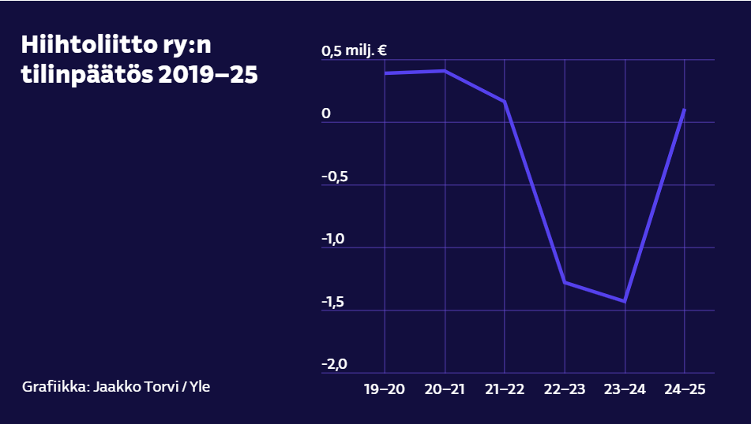

Hiihtoliitto pelastui kuin ihmeen kaupalla – vakava talouskriisi kääntyi nyt voitolliseksi tulokseksi
Hiihtoliiton taloudesta on kahden vuoden ajan kuultu lähinnä karmeita uutisia. Keskiviikkona liittovaltuusto siunaa pitkästä aikaa voitollisen tilinpäätöksen.
 Ristomatti Hakolan (vas.) ja Lauri Vuorisen hopeamitali parisprintissä oli suuria suomalaisilonaiheita Trondheimin MM-kisoissa viime talvena. Samaan aikaan Hiihtoliitossa tehtiin vimmatusti työtä taloustilanteen kohentamiseksi. Kuva: EPA-EFE
Ristomatti Hakolan (vas.) ja Lauri Vuorisen hopeamitali parisprintissä oli suuria suomalaisilonaiheita Trondheimin MM-kisoissa viime talvena. Samaan aikaan Hiihtoliitossa tehtiin vimmatusti työtä taloustilanteen kohentamiseksi. Kuva: EPA-EFE
Hiihtoliiton urheilijat ovat taas avainrooleissa, kun Suomi tavoittelee olympiamenestystä helmikuussa Milano-Cortinassa. Liitto itse ei ole viime vuosina ollut aivan olympiavireessä, tässä esimerkkejä:
Konsernitason tilinpäätökset vuosilta 2022–2024 yhteensä yli kolme miljoonaa euroa pakkasella.
Omat pääomat miinuksella yli neljä miljoonaa euroa.
Oman kaupallisen yrityksen eli Nordic Ski Finlandin alasajo pakkoraossa.
Oikeussalin kynnykselle edennyt, viime hetkellä sovintoratkaisun saavuttanut riita-asia toiminnanjohtaja Ismo Hämäläisen irtisanomisesta.
Jatkuvan negatiivisen julkisuuden aiheuttamat, myyntiin ja urheilijoiden luottamukseen heijastuneet mainehaitat.
Kuluneen noin vuoden aikana kurssi on kaikessa hiljaisuudessa saatu käännetyksi. Tämän viikon keskiviikkona Hiihtoliiton johto esittelee liittovaltuustolle ensimmäisen plusmerkkisen tilinpäätöksen kolmeen vuoteen. Puheenjohtaja Sirpa Korkatti ei ennen liittovaltuuston siunausta halunnut vahvistaa Yle Urheilulle summaa, mutta valtuutetuilta saatujen tietojen mukaan se on vähän alle 100 000 euroa.
Tulos on liitolle symbolisesti jättimäinen asia.
– Tämä on valtava juttu ja käänne, koko liiton saavutus, josta kiitos kuuluu kaikille osallisille. Kova tavoite ja työnteko, yhteinen suunta. Niistä tämä syntyi, puheenjohtajuuden keväällä 2024 vastaanottanut Korkatti sanoo.
Esimerkiksi vuosina 2018–2022 Hiihtoliitto teki peräkkäin neljä positiivista tilinpäätöstä, yhteensä noin 1,2 miljoonaa euroa. Silloin tilannetta auttoivat jälkipäässä ajanjaksoa myös koronapandemian aiheuttama huippu-urheilutoiminnan osittainen alasajo ja valtion urheilujärjestöille myöntämät korona-avustukset.
 Sirpa Korkatti sai keväällä 2024 käsiinsä kriisitunnelmissa olleen Hiihtoliiton puheenjohtajuuden. Kuva: Jyrki Ojala
Sirpa Korkatti sai keväällä 2024 käsiinsä kriisitunnelmissa olleen Hiihtoliiton puheenjohtajuuden. Kuva: Jyrki Ojala
Vaikka puheenjohtaja jakaa ansioista kiitosta oikealle ja vasemmalle, on selvää, että raskainta kivirekeä on runsaat puolitoista vuotta kiskonut Korkatin tärkein luottohenkilö, toiminnanjohtaja Marleena Valtasola.
Karmeita skenaarioita
Aiemminkin Hiihtoliitossa työskennellyt talousasiantuntija kutsuttiin takaisin vapaassa pudotuksessa olleeseen järjestöön keväällä 2024 estämään pahimmat skenaariot – kuten liiton alasajo.
– Muistan hyvin ne tunnelmat, kun muu henkilökunta oli pitkälti lomautettuna ja yksin selvittelin asioita täällä toimistolla. Ne olivat sekaisin ja keskeneräisiä, laskuja maksamatta eikä kokonaisuus ollut kenenkään hallussa. Kassa oli tyhjenemässä noin kahdessa kuukaudessa, muistelee Valtasola noin puolitoista vuotta pahimman kriisin jälkeen.
Hänen erittäin epäkiitollisiin tehtäviinsä kesällä 2024 kuului muun muassa kertoa urheilijoille edustustehtävien omavastuuosuuksista, joista on nyt luovuttu.
Vaikka yksi iso syy taloustilanteen kohenemiseen on taloudenpitoon palannut kuri ja päivittäiskontrolli, Korkatti muistuttaa, että säästämisen tiellä polun pää tulee aina vastaan. Liiton budjetti on viime vuodesta noussut noin yhdeksästä miljoonasta noin 10 miljoonaan, mitä selittää mm. kohentunut myynti.
 Hiihtoliittoon keväällä 2024 palanneella, myöhemmin toiminnanjohtajaksi nimetyllä Marleena Valtasolalla riitti hikisiä hetkiä toimistolla muilta rästiin jääneiden töiden ja tyhjenevän kassan parissa. Kuva: Jyrki Ojala
Hiihtoliittoon keväällä 2024 palanneella, myöhemmin toiminnanjohtajaksi nimetyllä Marleena Valtasolalla riitti hikisiä hetkiä toimistolla muilta rästiin jääneiden töiden ja tyhjenevän kassan parissa. Kuva: Jyrki Ojala
Olympiakisoihin valmistautuvia huippu-urheilujoukkueitaan liitto tukee harjoitus- ja kilpailukaudella yhteensä noin neljällä miljoonalla eurolla. Se on puoli miljoonaa enemmän kuin viime kaudella. Rahasta noin puolet menee maastohiihtoon; yhdistettyyn ja mäkihyppyyn uppoaa kumpaankin noin miljoona.
Opetus- ja kulttuuriministeriöstä liitto sai edellisjaossa valtionapua 960 000 euroa, josta alppilajiyhdistys Ski Sport Finlandille menee noin kolmannes.
Yllättävä päänavaus
Hiihtoliiton uusista kumppaneista ilman muuta kiinnostavin on ahvenanmaalainen rahapeliyhtiö PAF. Hiihtoliitto tiedotti ensimmäisenä suomalaisena urheilujärjestönä kumppanista, jonka mukaantulo edellyttää hallitusohjelman mukaista rahapelilain uudistusta eduskunnassa.
– Moni varmasti oletti, että tällaisen sopimuksen ensimmäisenä tekisi joku joukkuelaji, Korkatti toteaa.
Puheenjohtajan mukaan Hiihtoliiton taloudellinen selusta on sopimuksessa turvattu myös siinä epätodennäköisessä tilanteessa, että poliitikot eivät rahapelimarkkinaa sittenkään vapauttaisi.
 Mäkihyppysatsausten jatkamista Suomessa on kyseenalaistettu. Hiihtoliiton kannalta kyse on kohtalonkysymyksestä. Kotimaisten maailmancupien mäkikilpailut Kuusamossa ja Lahdessa ovat järjestötalouden kivijalkoja. Kuva: Tomi Hänninen/Chilipictures
Mäkihyppysatsausten jatkamista Suomessa on kyseenalaistettu. Hiihtoliiton kannalta kyse on kohtalonkysymyksestä. Kotimaisten maailmancupien mäkikilpailut Kuusamossa ja Lahdessa ovat järjestötalouden kivijalkoja. Kuva: Tomi Hänninen/Chilipictures
Ylen tämänhetkinen sopimus hiihtolajien televisioinnista jatkuu kauden 2025–2026 loppuun. Jatkosta ei ole tietoa. Sopimus on taannut liiton lajeille ja järjestön näkökulmasta etenkin sponsoreille merkittävän vapaan näkyvyyden. Korkatti myöntää, että kyse on liiton näkökulmasta kriittisestä seikasta.
– Mediasopimuksemme kaikkien kumppanien kanssa edellyttää vapaata tv-näkyvyyttä. Lajimme eivät katoa sen piiristä, Korkatti sanoo.
Hopealuotia ei luvassa
Vaikka liiton johdolla olikin tällä kertaa liittovaltuustolle talousluvuista myönteistä kerrottavaa, katseen irrottaminen pallosta hetkeksikään olisi iso virhe. Hiihtoliiton omat pääomat ovat edelleen miinuksella reilusti yli neljä miljoonaa euroa.
Kuilun kurominen umpeen ei vertaudu puheenjohtajan mukaan edes kestävyys-, vaan enemmänkin ultrajuoksuun.
– Hopealuotia ei ole esimerkiksi 4,5 miljoonaa euroa positiivisena tilinpäätöksenä luvassa. Se on varmaa, Valtasola naurahtaa.
– Tästä on täysi lupa kaikilla iloita, mutta heti sen jälkeen jatkuu määrätietoinen työnteko, Korkatti jatkaa.
Puheenjohtaja muistuttaa, että kun vaikeiden talousaikojen jälkeen tulee helpottavia uutisia, kriisitietoisuuden aste tyypillisesti laskee nopeasti. Valtasola muistelee erästä automatkaansa Helsingistä Kuopioon. Ennen kuin Puijon näkötorni ilmestyi horisonttiin, hän oli puhelimitse saanut liiton huippu-urheiluväeltä 800 000 euron toivomuslistan.
 Trondheimin MM-kisat olivat valtava yleisömenestys sekä kisatapahtumien että palkintoseremonioiden (kuvassa) osalta. Taloudelliseksi menestykseksi tämä ei kuitenkaan muuttunut. Kuva: EPA-EFE/AOP
Trondheimin MM-kisat olivat valtava yleisömenestys sekä kisatapahtumien että palkintoseremonioiden (kuvassa) osalta. Taloudelliseksi menestykseksi tämä ei kuitenkaan muuttunut. Kuva: EPA-EFE/AOP
Viime kevään suuri hiihtopuheenaihe oli Trondheimin MM-kisojen shokeeraava lähes kolmen miljoonan euron tappio, joka iski lujaa jopa Norjan hiihtoliiton kaltaiseen instituutioon. Ennuste kun oli lähes kahden miljoonan euron voitto. Suomen hiihtoliitto teki saman kokoluokan tappiot Lahden MM-kisoista 2017 ja maksaa niitä yhä lyhennysohjelman mukaan.
Liiton johto vieraili Trondheimissa MM-kisojen aikana ja havaitsi, että stadion oli käytännössä joka päivä kuin nuijalla lyöty ja maastoonkin pakkautui kymmeniätuhansia katsojia. Mutta:
– Se ei muuttunut rahaksi, sillä kisa-alueella ei oikein pystynyt kuluttamaan rahaa, vaikka olisi halunnut. Tämän miinan väistämme varmasti Lahdessa 2029, Korkatti vakuuttaa.